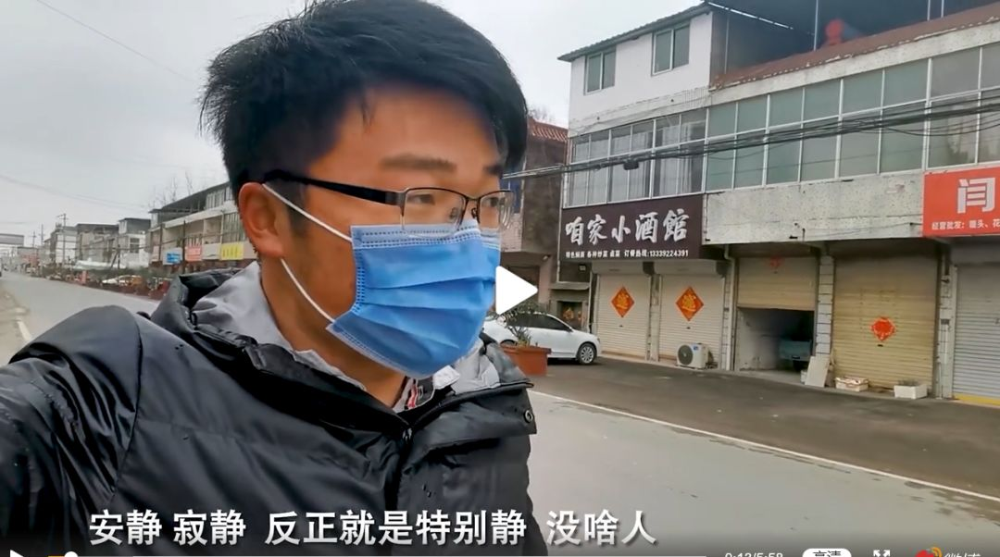
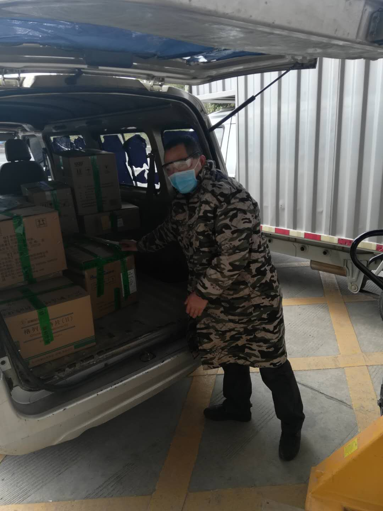
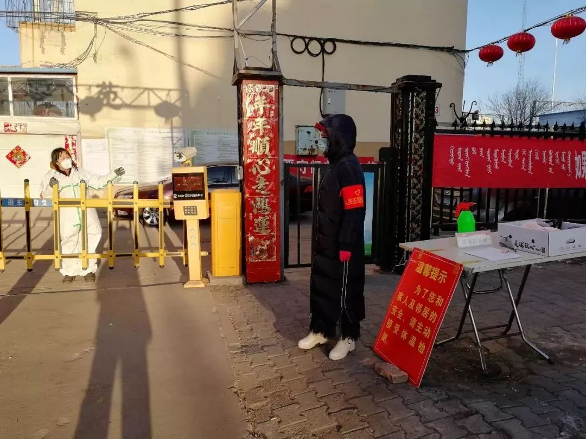
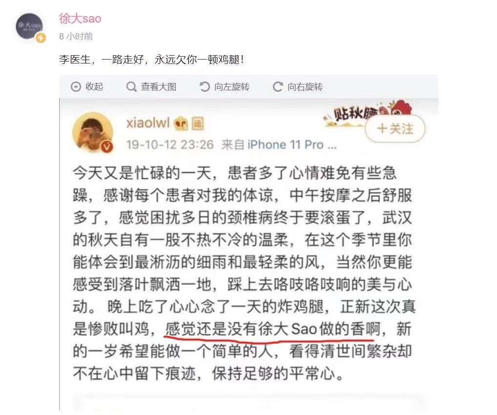
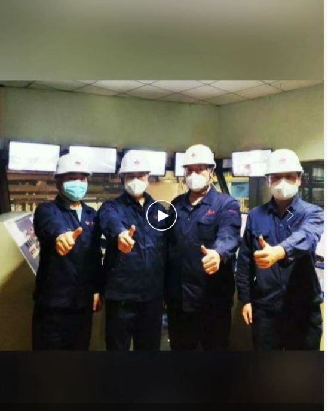

1716例医护感染，到底是怎么发生的
原文链接 备份链接 澎湃新闻记者 黄霁洁 明鹊 朱莹 温潇潇 葛明宁 特约撰稿 张小莲 实习生 张卓 沈青青 陈媛媛 蓝泽齐 住院15天后，2020年2月1日，阳光明媚，湖北黄冈市中心医院的医生黄虎翔准备出院了。他瘦了一些，洗了澡，换了 …


文/北乔
编辑/大风
大Sao走出家门，街上有一种清冽的寒气。今天是元宵节，安徽阜阳市的这个小镇已经风声鹤唳，街道上唯一一个骑自行车的行人忍不住回头看他。
“现在我们这个街上是特别的清净，安静，寂静。”大Sao举着手机拍摄，他戴着口罩，只露出浓密的一字眉和那副粉丝熟悉的黑框眼镜。他是趣头条上的土味吃播作者，在全网各平台已有500万粉丝。
脚底传来摩擦地面的声音，路边的小餐馆、馍店大门紧闭，似乎好久没有打开过了。

大Sao走出街头为特殊的粉丝购买食材
从除夕那天开始，一种新型冠状病毒肆虐了武汉，病毒被证实存在人传人，此时，已有500万人从武汉流向了各个城市，甚至走出国境。
安徽阜阳距离武汉只有350公里，但时间在人们漫长的居家隔离中走到了元宵节这天，阜阳市已经有了118例确诊病例，而市里的定点隔离医院距离这个小镇只有十来公里。
大Sao一直没有出过家门，今天他必须出来买一些食材——为一个他从未见过的粉丝做一顿鸡腿。就在2月7日凌晨2点多，这个平民英雄在病床上离去，万众瞩目，亿万人为他祈祷。

清晨，开启抗疫的一天
大Sao仍是一个素人，除了每天做吃播视频，他是一个空调装修工，一个普通的小镇青年。在三四五线城市普通人聚集的趣头条上，和他一样的三四五线的普通劳动者一样，都与这场战疫密切关联，但不会被镁光灯照到。
正月初八清晨，医药公司销售员瓜瓜骑着电动车行驶在怀化市区无人的街区，他即将抵达公司仓库，和二十多个同事开始这个城市医疗物资的输送。
测量体温，用快速洗手液洗手，消毒，查看当天客户的货品配送计划，打印出货单，然后去仓库提货，配送到市县各医院和村镇卫生室。瓜瓜的“战车”并无仪式感，只是一辆银色的面包车，他和同事开始搬运医疗物资，直到将有车厢全部塞满。
瓜瓜中等个儿，是两个孩子的父亲，和所有还未完全油腻的中年一样爱开玩笑，平时喜欢打英雄联盟，没事拍拍小视频发在趣头条平台社区。
这一天，一批医疗物资要从湖南省会长沙的药厂运回怀化，瓜瓜的工作是押车。车辆行驶在高速路上，穿过一个个检查站，一路出示通行证才能通过。
几箱药品、防护服和医用口罩要送往怀化市肺炎收治定点医院，他去登记领取了一套简易的防护服和护目镜。简易的防护服不会像医用防护服那样厚实不透气，他知道那种的感觉，如同钻进了一个密封的防水袋。

瓜瓜的同事正在搬运货物
面包车穿过无人的街道，进入医院大门。瓜瓜联络医院药房管理部门，被告知要穿过住院部，抵达里面内的药房仓库。
元宵节前夜，全国确诊案例已经达到31774人，每天新增三千多个确诊病例，医院成为海鲜市场之后最危险的病源地。瓜瓜抱着一箱药品穿过长长的走廊，路过护士站，看到一位穿着厚厚防护服的小护士趴在桌上睡着了。
这天早上七点多，在江苏省盐城市建湖县，吃完早饭的65岁老人扬人弋告诉老伴，“出去转转”，八点钟，他准时到社区报到了。
扬人弋还记得17年前，SARS肆虐，北京是重灾区，而他的儿子就在北京邮电大学上学。在那个人人惶恐的时期，他作为供销社下属单位的党支部书记，带领同事在建湖县路口检查行人车辆。
那时是真的害怕，因为还有儿子需要供养。如今儿子已经长大，不用再怕了，但孩子和老伴都会担心他虚弱的肝。一年前，一场手术切掉了他1/8的肝，现在还时时疼痛。小区里开始一天三次广播，发放出入证，告诉居民不要聚餐，注意戴口罩，勤洗手，他知道疫情严重了，打算用7/8的肝再来做一点事情。

小区门口的检查点 图源网络
扬人弋和另一位中年志愿者分在一组，开始做居民防疫信息登记。他们一家家敲门，爬楼，再敲门，看家中是否有人，是否有武汉回来的，是否在未来几日有出行计划。
锦湖小区是一个安置小区，里面既有回迁的本地居民，又有购置房产的外来户籍人口，居民中也有外出打工者。居委会给扬人弋一天发两个口罩，这是他的装备。但扬人弋和另一位老人商量，咱们敲门不入户，开门后离居民远一点。“我们不担心别人，别人还担心咱们呢！”

一顿鸡腿、几分钱金币
大Sao第一次走出家门，淡淡的担心在踏出家门那一刻已经消散，这如同一个有仪式感的征程。
他来到一家超市，肉已经卖完了，他步行到小镇的另一家超市，终于买到了鸡腿。
那条微博被很多人转给他。“今天又是忙碌的一天，患者多了心情难免有些急躁，感谢每个患者对我的体谅，中午按摩之后舒服多了，感觉困扰多日的颈椎病终于要滚蛋了，武汉的秋天自有一种不热不冷的温柔。”
这还是2019年10月12日，两个多月后的12月31日，这位吹哨“防护预警”，“华南水果海鲜市场确诊了7例SARS。在武汉市中心医院后湖院区急诊科隔离”，之后他和其他3名医生被警方找去签了训诫书。
2月7日，尽忠职守的医生因感染新型冠状病毒引发的肺炎离开了人世，这条微博被网友翻出来了，微博中还有一句话，“这天晚上吃了一直心心念念的鸡腿，但感觉还是没有徐大Sao做的香啊。”
他们给大Sao留言，“大Sao，给他做一顿鸡腿吧！”

大Sao微博 图源网络
“买到鸡腿，我一定会的。”大Sao回复。34岁，大Sao想，跟我差不多的年龄。医生的孩子5岁，跟自己的儿子小肥羊差不多大，但第二个孩子还未出生，即将在6月分娩，但再也看不到第一个说出病毒真相的父亲了。
在这个特殊的元宵节，这种外形似皇冠的新型病毒并没有因为医生的预警而被绞杀在摇篮——病毒胜利了，它感染了全国数万人，发热、咳嗽、呼吸困难，上千人因此丧命。
大Sao只是一名普通的空调装修工，如今也是，他在夏天的酷暑爬在楼顶和窗外，安装空调、维修空调，他自己也感觉，这是一个辛劳指数排在前列的职业。
大Sao喜欢倒腾吃的，他用工地上常用的那种不锈钢大饭钵吃饭，有时做的汤直接装在一个脸盆大小的盆里，端起来就喝。“今天吃顿好的”，这是他的口头禅，吃的时候，他摘下自己的黑框眼镜，砸吧着嘴说，“真香！”
他把自己做饭的视频发在网上，招来了两三百万粉丝，成了一个土味吃播的知名播主，这一天，他感到沉重、荣幸、敬畏——这位伟大的医生是他的粉丝。
徐大Sao吃播视频
“兄弟，今天做一顿你最爱吃的炸鸡腿，一路走好，同时致敬每一位医护人员。“大Sao要将这期视频的收入全部捐给这位平民英雄的家人，这笔钱可能只有上千元，但就如同粉丝们所要求的炸鸡腿一样，指代了灾难期那种难以言表的情感。
在新疆库尔勒，一个叫笑口常开的阿姨（以下简称“笑阿姨”）同样随手捐出了1千枚“金币”。这并不是真的金币，而是趣头条平台上用阅读资讯和用户签到等任务获得的奖励，每天一两个小时翻看下来，可以挣到几千枚，每一万枚金币价值1元，一天下来只有几毛钱。
“我感觉1千金币没啥用，我们挣的也不多。”笑阿姨打算在趣头条“助力武汉”的公益平台上每天捐些，她抱歉地对平台工作人员说。“人多力量就大了哈。”工作人员乐呵地回答，这些金币就会换成人民币购置医疗物资捐赠给灾区。
这个工作人员说了一个有意思的现象，这些普通劳动者捐赠的金币多的只价值几块钱，最多的也只有200多块，但却是这个用户一两年阅读资讯积攒下来的。
山西运城一位30岁中年捐赠了一个“看起来好看一点”的金币数——666666个；北京的厉害叔捐赠了半年积攒的50万个金币；而昆明市周边一个县城的娇捐出了账户里积攒的所有金币——57万多个。

在岗位上，就是战斗
在新疆库尔勒的一栋单身公寓，笑阿姨开始清扫走廊。她快50了，隔离楼层的那八个年轻人跟自己女儿差不多的年龄，都是从外地来上班的，需要在这里隔离14天。
正月初十是上班的第一天，领导给她打了电话。笑阿姨说，在这里工作了四年多，“那肯定是要来啊”。
单身公寓有五层，每层有25个房间，她和另外一个阿姨负责保洁消毒——一人负责两层楼。三楼是隔离楼，笑阿姨负责。
笑阿姨的职责除了清扫楼道厕所，还包括清理每一个房间的垃圾。留着短发的笑阿姨笑起来像邻家大妈般亲切，三楼住着的青年人会和她聊天。1997年时，笑阿姨就从河南老家来到了新疆库尔勒，女儿在这里上学长大，这里就是她的家。

社区里的工作人员
此时的库尔勒还没有出现新型肺炎的确诊病例，年前大女儿从乌鲁木齐回到了库尔勒的家中，如今她不能返回工作地，实习的二女儿也在家中，只有笑阿姨已经走上了前线。单身公寓的厕所一天要进行三次消毒，保护她的只有一个口罩，两天更换一个。
明天是元宵节，领导说不让回家，最好住在这里，笑阿姨同意了。她在食堂打来饭菜，坐在五楼宿舍里吃完，晚上六点多，疫情严重的湖北已经漆黑一片，但库尔勒的天空还是蔚蓝的，太阳距离山头还很遥远，明晃晃照耀着窗台。
元宵节这一天，辽宁鞍山电厂的电力值班员舍得仍在和同事们轮流加班。这家电厂除了发电外，还负责着鞍山市的供暖，因而在春节期间，无论是否有疫情，舍得都要和同事们留在控制室里。
正月初十的鞍山出现了第一例新型肺炎的确诊病例，疫情防护变得紧张。早上7点，舍得来到厂里，换上蓝色工服套装和帽子，检测体温，进入控制室，清洁仪器设备的台面，并用酒精擦拭日常接触的键盘、鼠标和仪器。
一天的工作是巡视检查电厂设备，监测温度、震动等指标，两轮检查之后，一切正常。午饭通知不能再到食堂就餐，一个同事去食堂买来盒饭，大家在控制室内吃完，之后又是设备巡查，下午增加了消毒环节，一直到晚上五点多，一天的工作结束了。

舍得所在电力公司的同事们
舍得开车回家。街道上的药店还开着。在夜幕降临后，路上的车辆更少了，“堵车的问题解决了。”舍得心想，突然觉得有点好笑。前方的车辆减速停下来，是红灯，车辆靠近，这是城市陌生人少有的亲密接触。

舍得在回家的路上
车辆越过没有行人的人行道，“郭明义”的墙体广告牌讲述的是上一个年代矿工的故事，而眼下，东北钢铁矿场的工人们能否对抗最大的敌人——病毒。
夜渐深，河南平顶山市郏县第一人民医院的财会专员柒哥还不能下班，医院走廊没有几个病人了，只能听到偶尔哒哒的脚步声。
这是县城里唯一一所大型医院，也是新型肺炎的定点医院。几天前，医院送来了两名疑似病人，在这个60万的小县城里，大多数人都到到周边大城市打工，逢年过节，外地务工人员都返回了。最近一周，两个疑似肺炎的返乡人员密切接触了二十多个人，如今都在医院隔离。

我们后退，谁来救他们
在郏县这所县级医院，正常情况下每天有1500人次的病人前来就诊，他们经过询诊、挂号、诊疗，第四步终将进入柒哥的窗口，那就是报销核算和凭证打印。
“医院才是最大的传染源，所以没事少来。”柒哥也是趣头条社区的一个作者，日常喜欢制作生活小常识、唱歌类的小视频发在社区，疫情期间已没有太多时间来发布视频了，但他还是在作者群里留言。
医院紧急将工作人员划分为两类，接触病人和不接触病人的，不接触病人的开始独立办公，柒哥属于接触的那一类。
早上7点45分，柒哥到达医院，开始准备一天要用的票据、现金，然后对工作区进行清洁消毒。对于医院工作人员来说，头等大事是自我保护，避免感染，为此医护人员的作息调整为24小时，然后居家2天隔离，无发烧症状后继续上班。
柒哥用七步洗手法洗手，带着口罩开始一天的工作。他的爱人是这个医院呼吸科的护士，在疫情期间，避免交叉感染，两人都不会见面。

医护人员忙着和病毒作战
白天的发热病人已经完成就诊或住院，晚上只有医护人员走来走去，医院的走廊很静。在没有新的病人时，柒哥也会趴在桌子上睡一会儿。呼吸科的妻子比自己更累，她们科室轮职当班的只有两三个护士，给病人测量体温、注射、送药、监测生理症状，24小时不间断穿梭，憋闷在防护衣里。早晨七点，他和妻子回到家，二人无言，妻子只是默默的脱下外衣放在阳台，消毒，洗澡，然后默默躺在床上，太累了。
柒哥曾经是个军人，他跟妻子聊过，如果两人真的被感染了怎么办。柒哥对妻子说，“我们做的就是这行，如果我们往后退的话，那谁还来救他们？”
元宵节前后，确诊病例越来越多。河北保定易县村庄里有年前从疫区回来的打工者，但老人们并不关心，在家闷久了，她们像往常一样聚在村口。
“我们年纪大了，不怕死。”她们对挨村巡查的县事业单位职工朵姐说。
从春节到元宵节，朵姐都会和同事轮流每天到县城周边的村庄巡查，偶尔也会碰到这样一群不戴口罩的老太太。“你们是年龄大了，你们还有儿子孙子呢！”她大声招呼老人们快点散开。老人们似乎听懂了，蹒跚着往家走，“是哦，还有孙子呢！”

敬平民英雄们
晚上8点，朵姐在灯火阑珊中回家，在相邻县里负责防疫工作的丈夫还没回家。他们时常会相互提醒，“别忘了戴口罩啊！”在最放松的时候，朵姐会翻翻趣头条上做美食的视频，也会随手将金币捐给“助力武汉”公益平台。她在用户聚集的群中解释，最近金币锐减，因为没有时间做任务了。
江苏大爷扬人弋喜欢在趣头条上看离退休职工待遇和劳资的信息。他退休的供销社曾经是事业单位，后改制后变为企业，同在一个单位，事业单位编制和企业编制员工退休金差额很大，相同学历、年龄不同酬劳，扬大爷在趣头条不断搜索这方面的信息，这方面的信息也会源源不断地被推送给他，如今他已经成为这方面的“专家”。
这一天奋战下来，扬人弋完成100多户居民登记，晚上回到家高兴地告诉老伴，这一百多户居民没有从疫区回来的，没啥风险。笑阿姨也更放心了，这八个从外省来的孩子没有一个发烧的；两天后，柒哥医院里一名新型肺炎的疑似患者也出院了。
村口的防疫检查点
舍得制作了一条支援武汉的视频，发布在趣头条的社区。一年下来，每条视频点击量都能达到几千的浏览量，但单条收入只有十几块钱。他必须继续制作，东北经济不好，普通岗位月收入就三四千，“孩子学体育，现在还挣不到多少钱”，舍得希望明年能开个小餐馆。
这和柒哥的想法一样，如今正是上有老下有小的年龄，只能拼命让生活过的好一点。
洗鸡腿，加盐、料酒腌制，裹上面粉、蛋液和面包糠，下锅。大Sao第一批下锅的鸡腿炸老了，颜色呈暗黄色，第二锅鸡腿出锅，颜色金黄。
大Sao知道医生粉丝懂自己，并不是自己做的美食有多么好吃，只是他能从中看到一份真实和简单的美好，就像是他在微博上许下的2020年愿望，“看得清世间繁杂，却不在心中留下痕迹”。

大Sao吃鸡腿视频
舍得、柒哥、笑阿姨、扬人弋、朵姐……越来越多的普通人在趣头条上聚集。从1月29日开始，5天时间，趣头条“助力武汉”公益平台上聚集了10万用户，他们有的捐赠几分钱，有的捐赠几角钱，聚少成多，一共捐出了价值17万元人民币的金币。
趣头条被称为“五环外的今日头条”，其用户大多为下沉市场最普通的劳动者，也就是那些疫情期间不被关注的素人。截至2月12日，趣头条公益平台“助力武汉”上聚集了156万这样的素人，捐赠了262万次，捐赠价值总额35万人民币的金币。根据趣头条的公益负责人管乐欣介绍，这笔资金将很快被用以购买医用物资定向捐往湖北地区。
大Sao将炸焦糊的那一盘鸡腿放在自己面前，将金黄色的一盘鸡腿放在对面，拿出两头蒜递给对面的“医生”，两头放在自己这里，还剥好了几颗随手丢进对面的盘子里，像一个熟悉的兄弟。取下眼镜，放在桌子上，他一句话都没有讲，低头一口口慢慢啃起了鸡腿，无数看者泪目。
“致敬，我们的平民英雄。”
 、
、


原文链接 备份链接 澎湃新闻记者 黄霁洁 明鹊 朱莹 温潇潇 葛明宁 特约撰稿 张小莲 实习生 张卓 沈青青 陈媛媛 蓝泽齐 住院15天后，2020年2月1日，阳光明媚，湖北黄冈市中心医院的医生黄虎翔准备出院了。他瘦了一些，洗了澡，换了 …
原文链接 备份链接 **采写/胡琪琛 ** 编辑/计巍 宋建华 志愿者在雨中送爱心餐 在这次新冠肺炎疫情中，李小熊的身份有很多。她是司机志愿者、志愿车队队长、捐款人、募捐人，因为自己被感染，成了新冠肺炎感染者，又因父母感染，成了感染者家 …
原文链接 备份链接 澎湃新闻记者 陈伊萍 2月14日晚8时许，上海市政工程设计研究总院(集团)有限公司（以下简称“上海市政总院”）接到武汉长江新城建设投资集团有限公司的紧急委托，承担武汉长江新城方舱医院的市政配套设计工作。按照防控部署，上 …
原文链接 备份链接 澎湃新闻记者 薛莎莎 56岁的杨柳萍骑着电动车在前，同事毛蕊开着车在后面跟着。途中，杨柳萍多次“赶”毛蕊回家，让他不要跟着，“我不能坐你的车，我已经病倒了，你不能再倒下”。毛蕊放心不下，一直跟着，直到目送杨柳萍进医院。 …
原文链接 备份链接 澎湃新闻记者 陈斯斯 “‘我是不是感染了新冠肺炎？’这个是线上问诊出镜率最高的问题。”2月17日，上海市同济医院精神医学科医生刘飞这样告诉澎湃新闻记者。 这些天，同济医院接到了大量的网络、电话和门诊等线上和线下的求助和 …